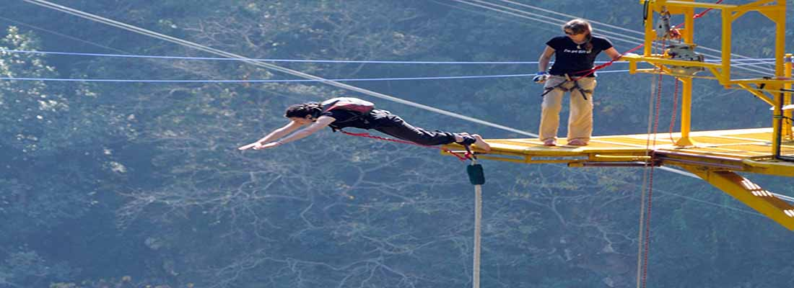

BUNGEE JUMPING
Adrenaline junkies have been coming to Nepal to experience this breathtaking and heart-pounding thrill of plunging off a suspension bridge above a river canyon. If you've got the courage it's the ultimate thrill few other activities can match and it's something that will stay with you forever. The thrill of a bungee jump can be experienced either at The Last Resort along the Arniko Highway or in the fascinating city of Pokhara. The bungee jump at the Last Resort was designed by one of New Zealand’s leading bungee consultants, and is operated by some of the most experienced jump masters in the business. The jump takes place from a 166 m wide steel suspension bridge that joins two sides of a deep valley over the raging Bhote Koshi River. The place has spectacular scenery with dense forests covering the top of the cliff. One can overnight here and go rafting canyoning and rock climbing as well. Bungee jumping in Pokhara | Naturally Nepal | Once is not enough You can also go for a bungee jump at Hemja, Pokhara. This is Nepal's only tower bungee, high ground bungee and swing, offering various options of bungee jumping. Located just 20 minutes away from Pokhara Lakeside, the jump site offers a spellbinding view of the Himalayas, the hills and the rivers.